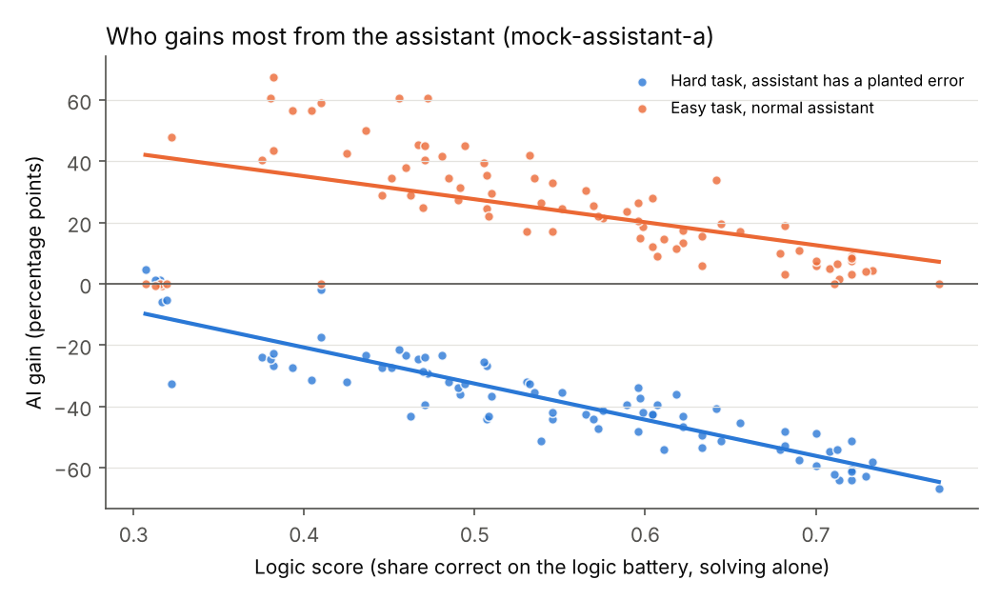
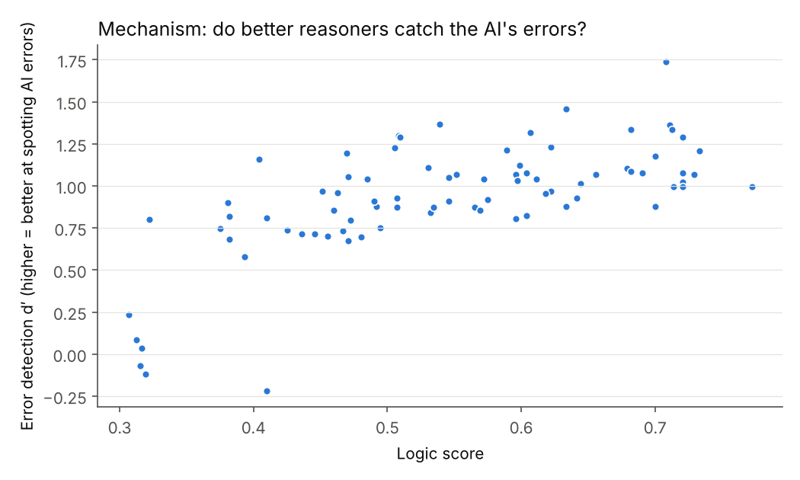
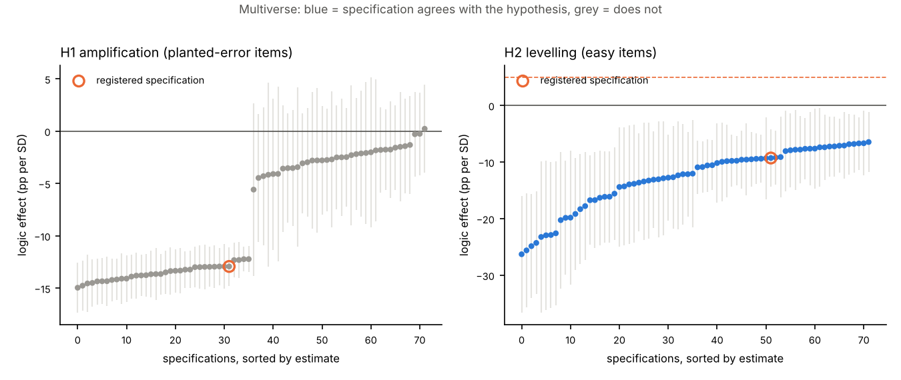

KEYUR SHAILESHKUMAR PATEL
ORCID: https://orcid.org/0009-0008-5261-043X
1) MSc Artificial Intelligence student, Department of Computer Science, Brunel University London, UK
2) Independent researcher
Conducted independently; not an official Brunel University London project.
TEST RUN with simulated (mock) models. These numbers only check the pipeline. They are not study results.
Run 20261105T193237Z-0da35171-mock_null · profile mock_null · started 2026-11-05T19:32:37+00:00 · 81 solvers (27 models × reasoning modes) · primary assistant mock-assistant-a
| Hyp. | Claim | Estimate | p (raw) | p (Holm) | Verdict |
|---|---|---|---|---|---|
| H1 | Amplification: when the AI makes planted errors, higher-logic solvers gain more (or lose less) from the AI | -12.93 | 1.0000 | 1.0000 | Not supported |
| H2 | Levelling: on easy, checkable tasks logic adds less than +5.0 points per SD to the AI gain | -9.29 | 0.0015 | 0.0045 | Supported |
| H4 | Mechanism: the logic advantage runs through catching AI errors (d′) | -2.05 | 0.9488 | 1.0000 | Not supported |
Estimates for H1/H2 are percentage points of AI gain (score with the AI minus score alone, same items) per 1 SD of logic score, adjusting for knowledge (MMLU) and model size. H4 is the indirect effect through error-detection d′. p-values: wild cluster bootstrap (H1, H2) and cluster bootstrap (H4), clustered by model.
{
"assistant": "mock-assistant-b",
"H1_p": 1.0,
"H2_p": 0.0015,
"H4_p": 0.6068,
"H1_estimate": -12.968802952607982,
"H2_estimate": -9.587395755950944
}



{
"gates_run": {
"G1": {
"gate": "G1",
"n_cases": 29,
"n_correct": 29,
"pass": true,
"failures": []
},
"G4_G5": {
"mock-assistant-a": {
"G4_manipulation_pass": true,
"n_planted": 150,
"n_clean": 150,
"leaks": 0,
"failed_after_retries": 0,
"G5_feature_auc": {
"chars": 0.5313555555555556,
"lines": 0.5309555555555555,
"steps": 0.5309555555555555,
"hedges": 0.5,
"negations": 0.5
},
"G5_worst_auc": 0.5313555555555556,
"G5_pass": true
},
"mock-assistant-b": {
"G4_manipulation_pass": true,
"n_planted": 150,
"n_clean": 150,
"leaks": 0,
"failed_after_retries": 0,
"G5_feature_auc": {
"chars": 0.5078,
"lines": 0.5086222222222222,
"steps": 0.5086222222222222,
"hedges": 0.5,
"negations": 0.5
},
"G5_worst_auc": 0.5086222222222222,
"G5_pass": true
}
},
"G2_G3": {
"n_units": 84,
"n_excluded": 3,
"excluded": [
{
"solver_unit": "mock-solver-27|brief",
"reason": "G2 collapsed: 100% same answer in conditional"
},
{
"solver_unit": "mock-solver-27|careful",
"reason": "G2 collapsed: 100% same answer in conditional"
},
{
"solver_unit": "mock-solver-27|direct",
"reason": "G2 collapsed: 100% same answer in conditional"
}
]
}
},
"gates_analysis": {
"G6": {
"mock-assistant-a": {
"gate": "G6",
"assistant": "mock-assistant-a",
"n_solvers": 84,
"flag_rate_catch_mean": 0.8462301587301587,
"false_alarm_clean_mean": 0.11119047619047619,
"median_difference": 0.8183333333333334,
"p_one_sided": 4.17012641832074e-15,
"pass": true
},
"mock-assistant-b": {
"gate": "G6",
"assistant": "mock-assistant-b",
"n_solvers": 84,
"flag_rate_catch_mean": 0.8492063492063493,
"false_alarm_clean_mean": 0.10785714285714286,
"median_difference": 0.8266666666666667,
"p_one_sided": 5.2129270127973424e-15,
"pass": true
}
},
"G7": {
"gate": "G7",
"benchmarks": [
"acc_folio",
"acc_logiqa"
],
"spearman_rho": 0.9691304370073401,
"p_one_sided": 4.2100748314484747e-50,
"n": 81,
"pass": true
},
"G5": {
"mock-assistant-a": {
"pass": true,
"worst_auc": 0.5313555555555556
},
"mock-assistant-b": {
"pass": true,
"worst_auc": 0.5086222222222222
}
}
},
"self_checks": [
{
"id": "C1",
"check": "Every AI reply matches its stored SHA-256",
"result": "pass",
"detail": "238960 replies, 0 mismatches"
},
{
"id": "C2",
"check": "Deduction answer keys recomputed by an independent SAT solver",
"result": "pass",
"detail": "324 items, 0 disagreements"
},
{
"id": "C3",
"check": "Syllogism answer keys recomputed by the rules of the syllogism",
"result": "pass",
"detail": "120 items, 0 disagreements"
},
{
"id": "C4",
"check": "Planted-error assignment re-derived from item ids and seed (exact half per answer type)",
"result": "pass",
"detail": "150 of 300 items planted"
},
{
"id": "C5",
"check": "Logic scores recomputed from the raw replies",
"result": "pass",
"detail": "84 solvers, max difference 5.6e-17"
},
{
"id": "C6",
"check": "Main regression recomputed with statsmodels (coefficient and cluster SE)",
"result": "pass",
"detail": "max difference 7.1e-15"
},
{
"id": "C7",
"check": "Holm correction recomputed with statsmodels",
"result": "pass",
"detail": "max difference 0.0e+00"
},
{
"id": "C8",
"check": "Lock held: registered and development items do not overlap",
"result": "pass",
"detail": "profile uses dev; overlap 0"
},
{
"id": "C9",
"check": "No solver prompt contains a clue about the answer or the planted error",
"result": "pass",
"detail": "237832 prompts scanned, 0 leaks"
},
{
"id": "C10",
"check": "Config and prompts in the run folder match the manifest",
"result": "pass",
"detail": "SHA-256 compared"
},
{
"id": "C11",
"check": "Preregistration freeze status",
"result": "n/a",
"detail": "NOT_FROZEN (not required for this profile)"
},
{
"id": "C12",
"check": "Answer parser passed its known-answer test",
"result": "pass",
"detail": "29 of 29 known replies read correctly"
}
]
}
{
"validity": {
"logic_score~acc_folio": {
"pearson": 0.951370705739837,
"spearman": 0.9584149809278867
},
"logic_score~acc_logiqa": {
"pearson": 0.9660950102835835,
"spearman": 0.9664411720668256
},
"logic_score~acc_mmlu": {
"pearson": 0.5818175502578307,
"spearman": 0.5263886302745587
},
"logic_score~belief_bias_index": {
"pearson": 0.05251780252943664,
"spearman": 0.03694050358971744
},
"logic_score~log_params": {
"pearson": 0.3657846887031867,
"spearman": 0.31112235729395954
},
"alone_easy_math~acc_gsm8k": {
"pearson": null
},
"logic_battery_standardized_alpha": 0.9264879336844419
},
"manipulation_check": {
"assistant_wrong_when_planted": 1.0,
"assistant_wrong_when_clean": 0.0
},
"quality": {
"api_error_rate": 0.0,
"unparsed_rate": 0.00223687308688486,
"ceiling_easy_alone_share_over_95": 0.037037037037037035,
"floor_hard_alone_share_under_40": 0.14814814814814814
}
}
{
"logic_score": {
"mean": 0.5447702331961591,
"sd": 0.12240896237798198,
"min": 0.3069444444444444,
"max": 0.7722222222222223
},
"acc_mmlu": {
"mean": 0.48203703703703704,
"sd": 0.12337640013840212,
"min": 0.2125,
"max": 0.7125
},
"alone_easy_math": {
"mean": 0.6234567901234568,
"sd": 0.2686036135917905,
"min": 0.0,
"max": 0.985
},
"alone_hard_deduction": {
"mean": 0.6081481481481482,
"sd": 0.18671576735181683,
"min": 0.2966666666666667,
"max": 0.98
},
"gain_easy_math__mock-assistant-a": {
"mean": 24.246913580246915,
"sd": 17.924864618873368,
"min": -0.5,
"max": 67.5
},
"gain_easy_math__mock-assistant-b": {
"mean": 24.358024691358025,
"sd": 18.15010925722991,
"min": -0.5,
"max": 67.5
},
"gain_hard_error__mock-assistant-a": {
"mean": -37.818930041152264,
"sd": 16.005558876590005,
"min": -66.66666666666666,
"max": 4.666666666666669
},
"gain_hard_error__mock-assistant-b": {
"mean": -37.596707818930035,
"sd": 15.387830333071534,
"min": -67.33333333333333,
"max": 3.3333333333333326
},
"gain_hard_clean__mock-assistant-a": {
"mean": 31.30041152263374,
"sd": 17.105197791759057,
"min": -1.3333333333333308,
"max": 63.33333333333333
},
"gain_hard_clean__mock-assistant-b": {
"mean": 31.77777777777778,
"sd": 17.2156259769367,
"min": -0.6666666666666654,
"max": 64.66666666666667
},
"dprime__mock-assistant-a": {
"mean": 0.927099464742773,
"sd": 0.3392126002608024,
"min": -0.2162304379491705,
"max": 1.739129696978225
},
"dprime__mock-assistant-b": {
"mean": 0.9600283925656096,
"sd": 0.3783803260428396,
"min": -0.3003046838476621,
"max": 1.5483063478190031
}
}
{
"run_id": "20261105T193237Z-0da35171-mock_null",
"package_version": "0.2.0",
"config_sha256": "73f83c55e6b0b89cc3d1f6276f25ce57cb16016379b8bab9b20db4f447c6a652",
"prompts_sha256": "e6bc6f069bcfccd6ae50959548b245b4a6999ffd41049273845416ae9525f4ec",
"seed": 7110526,
"started_utc": "2026-11-05T19:32:37+00:00",
"finished_utc": "2026-11-05T19:34:44+00:00",
"duration_s": 126.2
}
Stage hashes:
{
"items": {
"counts": {
"syllogism": 120,
"conditional": 80,
"crt": 30,
"easy_math": 200,
"hard_deduction": 300,
"logic_creative": 40,
"catch": 24,
"folio": 200,
"logiqa": 300,
"gsm8k": 300,
"mmlu": 400
},
"sha256": {
"syllogism": "bd8aeb8ac57b0919673de2bcfa4c4fa03d2ffc33f33cfdc7f119ac5b2612fe97",
"conditional": "2e138d8157cda3b563f5fbc506d3fb00769821e97de95efdca21fd076db68720",
"crt": "301344a2261d8c4453964d1f8e130023cd147a10b0a46fb4cc48f69028ba9680",
"easy_math": "6331139cad9845e424f68df25eae582edfdb2c0d521b28737d4d710c67d2d6b0",
"hard_deduction": "945e396537521f4b6febe4e263810dcecb9be49c31c3aba000d0e2a18c994fa9",
"logic_creative": "32995178f86f9232e1bda0f526fe0caa7a040fc6dbe335ceab95aea928624a48",
"catch": "3cd95960357722630373bfc49ca9aab776eb026a20d1b2f79893f8804dad7bb1",
"folio": "7ef996eed89788dbdaec8cbbbb3b9fb5cb9f271483c6711f8e2e13e65dabc40f",
"logiqa": "6c5ea51028738225fea1f3a352e8bfa92f937a96062b56459a1e4b0107194fcd",
"gsm8k": "e917a7bdc1a4d9e5eb510a2ddb566de59a2d816d57f7eea04d4c724743112500",
"mmlu": "8a0eb433a0444879b576934fefc6c81452c82987eca59865726307741d39d763"
},
"benchmarks": {
"folio": {
"repo": "SYNTHETIC stand-in (offline run)",
"n": 200,
"status": "synthetic"
},
"logiqa": {
"repo": "SYNTHETIC stand-in (offline run)",
"n": 300,
"status": "synthetic"
},
"gsm8k": {
"repo": "SYNTHETIC stand-in (offline run)",
"n": 300,
"status": "synthetic"
},
"mmlu": {
"repo": "SYNTHETIC stand-in (offline run)",
"n": 400,
"status": "synthetic"
}
}
},
"assistants": {
"mock-assistant-a": {
"n": 564,
"failed": 0,
"hard_planted": 150,
"hard_clean": 150,
"models_reported": [
"mock-a"
],
"sha256": "741cfffb3e910765c6de83d147410d921f3a5f57ad60b4e4ab167b769731e571"
},
"mock-assistant-b": {
"n": 564,
"failed": 0,
"hard_planted": 150,
"hard_clean": 150,
"models_reported": [
"mock-b"
],
"sha256": "c9e0c90617191724b8da2a1308ace639a6f964e651c40c9b9b36894bc18ccf62"
}
},
"trials": {
"n": 237832,
"api_errors": 0,
"unparsed": 532,
"llm_calls_new": 238960,
"llm_cache_hits": 0,
"models_reported": [
"mock-solver-00=mock-00",
"mock-solver-01=mock-01",
"mock-solver-02=mock-02",
"mock-solver-03=mock-03",
"mock-solver-04=mock-04",
"mock-solver-05=mock-05",
"mock-solver-06=mock-06",
"mock-solver-07=mock-07",
"mock-solver-08=mock-08",
"mock-solver-09=mock-09",
"mock-solver-10=mock-10",
"mock-solver-11=mock-11",
"mock-solver-12=mock-12",
"mock-solver-13=mock-13",
"mock-solver-14=mock-14",
"mock-solver-15=mock-15",
"mock-solver-16=mock-16",
"mock-solver-17=mock-17",
"mock-solver-18=mock-18",
"mock-solver-19=mock-19",
"mock-solver-20=mock-20",
"mock-solver-21=mock-21",
"mock-solver-22=mock-22",
"mock-solver-23=mock-23",
"mock-solver-24=mock-24",
"mock-solver-25=mock-25",
"mock-solver-26=mock-26",
"mock-solver-27=mock-27"
],
"sha256": "d935e72a3d42353fb64be99fe01cf18a9c4d99112039cb37587cb9975d68609b"
},
"scored": {
"trials": "bf3aae650534c5c0ad15233547d693265fc943c6f7a0aa4b57c408ad4ee5d5ec",
"solver_level": "cb6723cbd23ae938a6f1051a9e1c9a686b8533469b5162908522a0fd93951282"
},
"analysis": {
"results_sha256": "b81ab59935595814c46da0d458cea1e678e224e171369db2019556933e23cfd9"
}
}
Every file in this run folder is listed with its SHA-256 in SHA256SUMS.txt.
Check it with: python -m logicxai verify /tmp/claude-0/runs2/20261105T193237Z-0da35171-mock_null